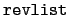

suivant: Les équations différentielles
monter: Les systèmes linéaires
précédent: Résolution d'un système linéaire
Table des matières
Index
Résolution d'une récurrence linéaire : reverse_rsolve
reverse_rsolve a comme paramètre un vecteur
v = [v0...v2n-1] de longueur paire égale à 2n.
reverse_rsolve permet de résoudre une récurrence linéaire
de degré inférieur à n
xn*vn+k + ... + x0*vk = 0
où les xj sont les n + 1 inconnues.
reverse_rsolve renvoie la liste
x = [xn,...x1, x0] des coefficients
xj (si xn  0 alors xn = 1).
0 alors xn = 1).
En d'autres termes, reverse_rsolve résout le système d'équations
linéaires de n équations à n + 1 inconnues :
| xn*vn + ... + x0*v0 |
= |
0 |
|
| ... |
|
|
|
| xn*vn+k + ... + x0*vk |
= |
0 |
|
| ... |
|
|
|
| xn*v2*n-1 + ... + x0*vn-1 |
= |
0 |
|
La matrice A du système à résoudre a n lignes et n + 1 colonnes :
A = [[v0, v1...vn],[v1, v2,...vn-1],...,[vn-1, vn...v2n-1]]
reverse_rsolve renvoie la liste
x = [xn,...x1, x0] des coefficients
xj (si xn 0 alors xn = 1) et x est la solution dy système
A*(x).
Exemples
- Trouver une suite vérifiant la récurrence linéaire de
degré au plus 2 et dont les premiers termes sont 1, -1, 3, 3.
On tape :
reverse_rsolve([1,-1,3,3])
On obtient :
[1,-3,-6]
Sans reverse_rsolve, on aurait du écrire la matrice du système
à résoudre :
[[1, - 1, 3],[- 1, 3, 3]]
puis utiliser la commande rref :
rref([[1,-1,3],[-1,3,3]])
de réponse [[1,0,6],[0,1,3]]
donc puisque x2 = 1, on a x0 = - 6 et x1 = - 3
et on a bien :
x0 - x1 +3x2 = 0 et
- x0 +3x1 +3x2 = 0
- Trouver une suite vérifiant la récurrence linéaire de
degré au plus 3 et dont les premiers termes sont 1, -1, 3, 3,-1, 1.
On tape :
reverse_rsolve([1,-1,3,3,-1,1])
On obtient :
[1,(-1)/2,1/2,-1]
La matrice du systeme à résoudre est donc :
[[1,-1,3,3],[-1,3,3,-1],[3,3,-1,1]]
On a si on utilise rref :
rref([[1,-1,3,3],[-1,3,3,-1],[3,3,-1,1]])
de réponse [1,0,0,1],[0,1,0,1/-2],[0,0,1,1/2]]
donc puisque x3 = 1, on a x0 = - 1, x1 = 1/2 et x2 = - 1/2
suivant: Les équations différentielles
monter: Les systèmes linéaires
précédent: Résolution d'un système linéaire
Table des matières
Index
Documentation de giac écrite par Renée De Graeve